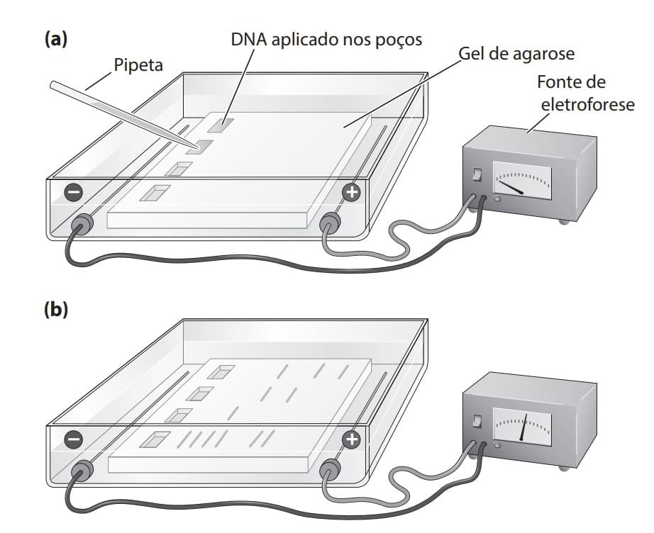
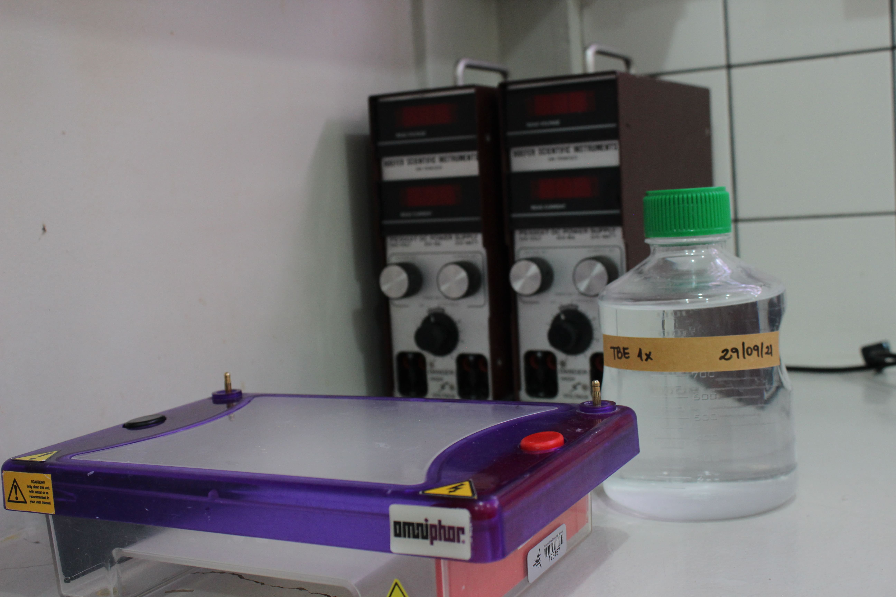
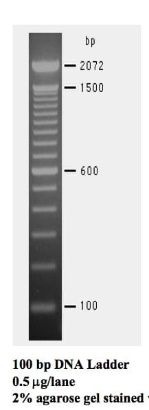
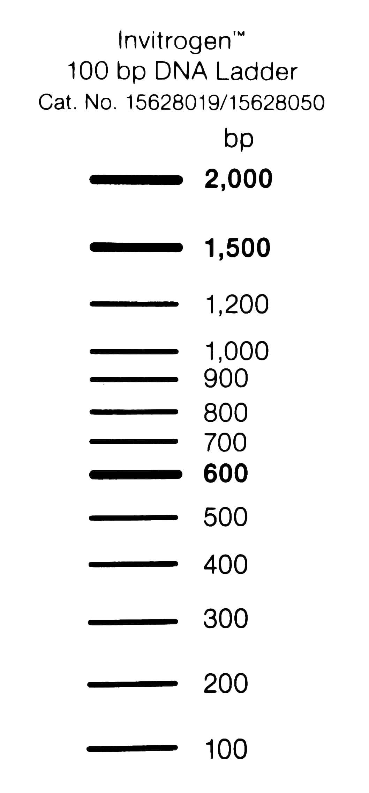

8 Eletroforese
A eletroforese consiste em um método de separação de macromoléculas, como o DNA, por meio da aplicação de corrente elétrica. Como as moléculas de DNA apresentam carga negativa, quando são submetidas a um campo elétrico, elas migram para o polo positivo, sendo este o princípio da eletroforese, ou seja, moléculas com cargas distintas irão migrar pelo gel de um polo a outro. Além disso, quanto menor for o tamanho da molécula de DNA (menor a quantidade de nucleotídeos), mais rápido será o seu deslocamento e consequentemente maior será a distância percorrida.
Existem duas maneiras para realizar uma eletroforese em gel, podendo ser vertical ou horizontal. A eletroforese vertical é feita com géis de poliacrilamida e cada polo da cuba está em um recipiente com tampão de corrida (o polo negativo encontra-se acima e o polo positivo abaixo). Já a eletroforese horizontal é realizada geralmente com géis de agarose que pode ser de diferentes concentrações, com uma cuba sendo um recipiente único, ou seja, o tampão preenche todo o recipiente, polos negativo e positivo, inclusive cobrindo o gel. Em ambos os casos a corrente elétrica irá atravessar o gel e induzir a migração das moléculas de DNA do polo negativo para o polo positivo.
A escolha por uma eletroforese vertical ou horizontal vai depender do objetivo que deseja atingir. Géis de poliacrilamida são ideais para fragmentos que necessitam de uma maior resolução, visto que são mais sensíveis quando comparados aos géis de agarose e permitem a separação de moléculas com variações de até 1 pb em seu tamanho. Géis de agarose embora não apresentem uma resolução tão boa para separação de fragmentos com pouca diferença de tamanho, são ideais para separar moléculas e fragmentos com diferenças de tamanho maiores de acordo com a concentração do gel utilizado.
Para a eletroforese horizontal em gel de agarose, o gel é preparado de acordo com a concentração desejada (no laboratório geralmente é utilizada a concentração de 1%), misturando a quantidade correta de agarose, tampão TBE 5x (Tris, Ácido Bórico e EDTA) e água destilada. Para que a agarose seja completamente dissolvida é preciso aquecer em microondas até a solução ficar completamente translúcida. Posteriormente, o gel é colocado em um suporte apropriado com os pentes com a finalidade de formar as cavidades (poços) onde as amostras serão aplicadas. Após preparação e aplicação das amostras nas cavidades do gel, este será colocado na cuba juntamente com o tampão de corrida (TBE 1x) e a cuba será ligada por meio de fios em uma fonte de energia. O pesquisador deve ajustar a voltagem adequada e o tempo de corrida.
Depois que a corrida é finalizada, a fonte de energia é desligada e o gel é retirado da cuba eletroforética, podendo, posteriormente, ser visualizado em um equipamento chamado transiluminador. A visualização é possível devido a corantes que são adicionados no momento da preparação das amostras (como GelRed e Safer) e que emitem fluorescência sob determinadas condições. É importante determinar qual o tipo de equipamento e qual corante deve ser utilizado (transiluminador UV ou LED). A eletroforese pode ser utilizada para realizar quantificação de DNA e visualização e estimativa de tamanho dos fragmentos amplificados.
É importante lembrar que o tempo de migração das amostras e a voltagem escolhida são parâmetros importantes na eletroforese. Quanto maior o tempo de migração, maior será a separação dos fragmentos. Quanto maior a voltagem, mais rápida será a migração das moléculas no gel. No Nupgen geralmente utiliza-se a voltagem em torno de 90V por aproximadamente uma hora.


8.1 Ladder
O Ladder é um marcador de peso molecular utilizado para determinar o tamanho dos fragmentos após a amplificação do DNA. É composto por produtos de PCR e plasmídeos digeridos com enzimas de restrição, sendo ideal para uso como padrão de peso molecular conhecido para eletroforese em gel de agarose. O Ladder apresenta bandas de maior intensidade que irão servir como pontos de referência (geralmente três bandas).
No Nupgen há duas opções de Ladder para serem utilizados como padrão, o Ladder 100 pb e o Ladder 1 Kb. O marcador DNA Ladder 100 pb é o mais utilizado nos protocolos do laboratório e consiste em múltiplas repetições de fragmentos de DNA, separados a cada 100 pb até 1 Kb (ou 1400 pb), com fragmentos adicionais de 1500 e 2000 (ou 2072) pb. Já o marcador de peso molecular DNA Ladder 1 Kb contém 14 fragmentos facilmente identificáveis, comumente utilizado para a identificação de massa molecular de fragmentos de DNA entre 250 bp a 10 Kb.


8.2 Lambda
Lambda é um bacteriófago de Escherichia coli e seu DNA contém 48.502 pares de nucleotídeos. É utilizado como DNA padrão com concentrações conhecidas (por exemplo 5, 10 e 20 ng/μL) para quantificar o DNA extraído de amostras alvo de estudos por meio da comparação visual pela fluorescência e espessura das bandas. O DNA fago Lambda é adquirido de empresas com uma concentração estoque específica e para ser utilizado na rotina do laboratório é preciso realizar a diluição com base nas concentrações desejadas.
O DNA fago Lambda é utilizado para a quantificação de DNA extraído em diferentes concentrações, enquanto o Ladder é utilizado na eletroforese para verificar o tamanho do fragmento de interesse amplificado após a PCR e nos géis de purificação.
8.3 Loading
O loading é utilizado para facilitar a visualização da corrida tanto no momento de aplicação das amostras de DNA no gel, quanto ao final da corrida através de sua coloração roxa. Além disso, ele possui a função de aumentar a densidade da amostra, evitando com que ela suba e trasnforde dos poços durante a corrida do gel. Essa solução é composta com corante azul de bromofenol e sacarose. Como o DNA não possui cor, também se adiciona um corante que emite fluorescência para que se consiga visualizá-lo com clareza no momento em que é exposto à luz UV ou LED no transiluminador. Os corantes normalmente utilizados são o brometo de etídio (agente mutagênico e carcinogênico), Saffer e GelRed.
8.4 Gel de agarose
O gel de agarose é a matriz na qual é aplicada a amostra e que permite realizar a separação de moléculas de DNA do polo negativo para o positivo. A agarose é um polissacarídeo extraído de uma alga marinha que, quando solidificada, forma uma rede porosa. O tamanho dos poros dependente da concentração de agarose utilizada para fazer o gel, quanto maior concentração de agarose menores os poros dificultando a migração de grandes moléculas de DNA. Essa matriz cria uma resistência, onde moléculas menores migram mais rápido e moléculas maiores mais devagar. A capacidade de separar moléculas por tamanho pode ser útil em diversas aplicações de pesquisa, como por exemplo identificar o tamanho das amostras desconhecidas em comparação com fragmentos conhecidos.
O gel de agarose deve ser preparado ajustando-se a concentração apropriada para separar os fragmentos de DNA presentes nas amostras estudadas. Normalmente, as concentrações de agarose no gel variam de 1% a 3%. Exemplos de dilução serão dadas no tópico a seguir.
Gel 1%
| Cuba - 60 mL |
|---|
| 0,6g de agarose |
| 12 mL de TBE 5X |
| 48 mL de água destilada |
| Cuba - 120 mL |
|---|
| 1,2g de agarose |
| 24 mL de TBE 5X |
| 96 mL de água destilada |
Gel 1,4%
| Cuba - 120 mL |
|---|
| 1,68g de agarose |
| 24 mL de TBE 5X |
| 96 mL de água destilada |
Gel 3%
| Cuba - 120 mL |
|---|
| 3,6g de agarose |
| 24 mL de TBE 5X |
| 96 mL de água destilada |
8.5 Eletroforese de Amplificação e Purificação.
Obs: O gel para purificação deverá ser novo, enquanto o da amplificação pode ser reutilizado.
Ladder 100 pb
2 μL de loading + 1 μL de GelRed + 2 μL de Ladder 100 pb
Por amostra
2 μL de loading + 1 μL de GelRed + 3 μL da PCR
- Fio preto em cima (polo negativo) e o fio vermelho embaixo (polo positivo).
- Gel agarose 1% (pode ser reutilizado).
- Realizar a corrida eletroforética a 90 volts, por aproximadamente 1 hora.
- Aplicar o Ladder 100 pb no primeiro poço.
8.6 Eletroforese de Quantificação.
Quantificação com gel de agarose
A eletroforese para quantificação de DNA não é realizada para todos os organismos trabalhados no laboratório pois em alguns casos (como na extração de parasitos) a quantidade de DNA extraído é muito pequena para ser visualizado no gel.
O gel para quantificação deverá ser novo.
Lambda:
Lambda 5ng/μL - 5μL + 1 μL de GelRed
Lambda 10ng/μL - 5μL + 1 μL de GelRed
Lambda 20ng/μL - 5μL + 1 μL de GelRed
Amostra - 2 μL de loading + 1 μL de GelRed + 3 μL da PCR